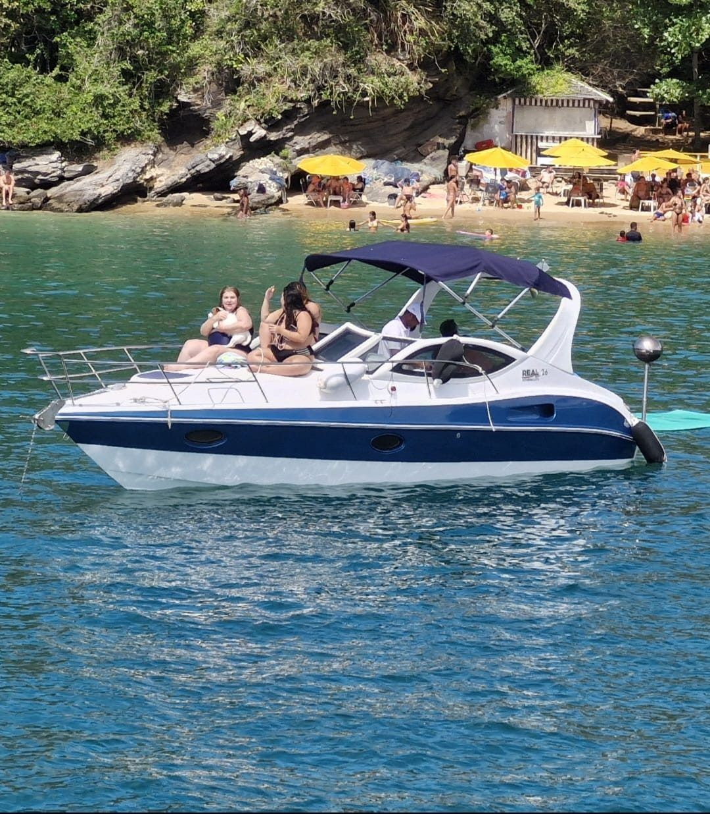
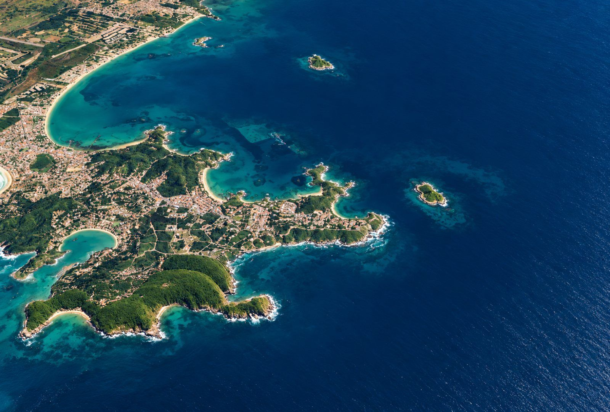

Tu día en el mar,
en todo Brasil.
Barcos con marinero, solo para tu grupo. Elige el destino, la fecha y cuántas personas van a bordo.





Empezamos por Búzios, donde la primera flota ya lleva grupos a las playas.
Después vienen el mar de Río y todo Brasil, un destino a la vez.
Del sofá al mar
Reservar un barco tiene que ser tan simple como pedir un auto. Este es el camino, del primer clic al embarque.
En casa
- Elige el destino y la fecha1 minuto
- Compara barcos, fotos y preciosen el sitio
En la reserva
- Pregúntanos lo que quierasWhatsApp
- Asegura la fecha con la seña50%
El día
- Encuentra al marinero en el muellea la hora
- Paga el restoal embarcar
Mares
Los destinos que Bordazul va a cubrir. Abrimos cada uno cuando tenga buenos barcos para alquilar.
Río de Janeiro
- BúziosRJEmbarque abierto
- Arraial do CaboRJMuy pronto
- Cabo FrioRJMuy pronto
- Rio de JaneiroRJMuy pronto
- Angra dos ReisRJMuy pronto
- ParatyRJMuy pronto
São Paulo
- IlhabelaSPMuy pronto
- UbatubaSPMuy pronto
- GuarujáSPMuy pronto
Santa Catarina
- FlorianópolisSCMuy pronto
- BombinhasSCMuy pronto
- Balneário CamboriúSCMuy pronto
Bahía
- SalvadorBAMuy pronto
- Morro de São PauloBAMuy pronto
- Porto SeguroBAMuy pronto
Alagoas y Pernambuco
- MaragogiALMuy pronto
- Porto de GalinhasPEMuy pronto
- Fernando de NoronhaPEMuy pronto
Lagos y ríos
- CapitólioMGMuy pronto
- Lago Paranoá, BrasíliaDFMuy pronto
- Rio Negro, ManausAMMuy pronto
¿Tienes un barco parado en la marina? Puede convertirse en paseos e ingresos, sin que tengas que ocuparte de anuncios, atención o cobros.
Bordazul nació de una empresa de paseos en lancha en Búzios que ya lo hace todos los días: recibe al cliente, responde dudas, confirma la fecha y cobra la seña. El dueño solo se ocupa del barco y del paseo.
Ahora llevamos esta forma de trabajar a otros mares de Brasil. Abrimos los registros poco a poco, destino por destino, para que cada ciudad empiece con buenos barcos.
Si tienes lancha, yate, velero, catamarán o goleta con marinero habilitado, escríbenos. Tú defines el precio que quieres recibir, y el barco está en la agenda solo cuando quieras.
Preguntas
¿Qué es Bordazul? Una plataforma para alquilar barcos con marinero en los destinos náuticos de Brasil, con barcos de varios dueños en un solo lugar.
¿Dónde hay barcos hoy? En Búzios, Río de Janeiro. Allí ves todas las lanchas, fotos y precios por temporada y reservas en línea. Los otros destinos abren poco a poco.
¿Todos los barcos tienen marinero? Sí. Todos los paseos se hacen con marinero habilitado, y el barco es solo para tu grupo.
¿Qué incluye en Búzios? Combustible, hielo, carbón, agua mineral y conservadora. Comidas y bebidas no están incluidas, y el equipo prepara el asado si llevas la carne.
¿Cómo reservo? Elige el barco, la fecha y el número de personas. La fecha queda asegurada con una seña del 50% y el resto se paga el día del paseo.
¿Cómo puedo pagar? La seña se puede pagar por Pix para cualquier fecha y con tarjeta cuando faltan 5 días o más para el paseo.
¿Y si necesito cancelar? Puedes quedarte con un crédito del 100% de la seña por 1 año. Con 7 días o más de anticipación, también puedes pedir la seña completa de vuelta.
¿Y si el mar no está bueno? El paseo se pasa a otra fecha, sin costo.
¿Cuándo abre mi ciudad? En cuanto tenga buenos barcos para alquilar. Pide aviso por WhatsApp y te enteras primero.
¿Puedo anunciar mi barco? Sí. Escríbenos por WhatsApp: los registros se abren destino por destino.
¿Quién está detrás de Bordazul? Búzios Lanchas, empresa registrada que ya lleva grupos a pasear en lancha en Búzios.
La primera flota ya está en el agua. El resto de Brasil viene justo detrás.
¿Vamos a Búzios?
Lanchas de 22 a 35 pies, para hasta 16 personas, con paseos de 4 o 7 horas.
Ver lanchas en Búzios